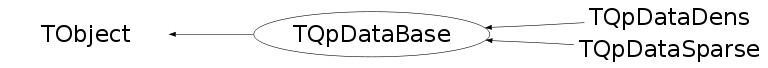

class TQpDataBase: public TObject
TQpDataBase Data for the general QP formulation The Data class stores the data defining the problem and provides methods for performing the operations with this data required by the interior-point algorithms. These operations include assembling the linear systems (5) or (7), performing matrix-vector operations with the data, calculating norms of the data, reading input into the data structure from various sources, generating random problem instances, and printing the data.
Function Members (Methods)
This is an abstract class, constructors will not be documented.
Look at the header to check for available constructors.
public:
| virtual | ~TQpDataBase() |
| void | TObject::AbstractMethod(const char* method) const |
| virtual void | Amult(Double_t beta, TVectorD& y, Double_t alpha, const TVectorD& x) |
| virtual void | TObject::AppendPad(Option_t* option = "") |
| virtual void | ATransmult(Double_t beta, TVectorD& y, Double_t alpha, const TVectorD& x) |
| virtual void | TObject::Browse(TBrowser* b) |
| static TClass* | Class() |
| virtual const char* | TObject::ClassName() const |
| virtual void | TObject::Clear(Option_t* = "") |
| virtual TObject* | TObject::Clone(const char* newname = "") const |
| virtual void | Cmult(Double_t beta, TVectorD& y, Double_t alpha, const TVectorD& x) |
| virtual Int_t | TObject::Compare(const TObject* obj) const |
| virtual void | TObject::Copy(TObject& object) const |
| virtual void | CTransmult(Double_t beta, TVectorD& y, Double_t alpha, const TVectorD& x) |
| virtual Double_t | DataNorm() |
| virtual void | DataRandom(TVectorD& x, TVectorD& y, TVectorD& z, TVectorD& s) |
| virtual void | TObject::Delete(Option_t* option = "")MENU |
| virtual Int_t | TObject::DistancetoPrimitive(Int_t px, Int_t py) |
| virtual void | TObject::Draw(Option_t* option = "") |
| virtual void | TObject::DrawClass() constMENU |
| virtual TObject* | TObject::DrawClone(Option_t* option = "") constMENU |
| virtual void | TObject::Dump() constMENU |
| virtual void | TObject::Error(const char* method, const char* msgfmt) const |
| virtual void | TObject::Execute(const char* method, const char* params, Int_t* error = 0) |
| virtual void | TObject::Execute(TMethod* method, TObjArray* params, Int_t* error = 0) |
| virtual void | TObject::ExecuteEvent(Int_t event, Int_t px, Int_t py) |
| virtual void | TObject::Fatal(const char* method, const char* msgfmt) const |
| virtual TObject* | TObject::FindObject(const char* name) const |
| virtual TObject* | TObject::FindObject(const TObject* obj) const |
| virtual TVectorD& | GetBa() |
| virtual void | GetDiagonalOfQ(TVectorD& dQ) |
| virtual Option_t* | TObject::GetDrawOption() const |
| static Long_t | TObject::GetDtorOnly() |
| virtual TVectorD& | GetG() |
| virtual const char* | TObject::GetIconName() const |
| virtual TVectorD& | GetiSlowerBound() |
| virtual TVectorD& | GetiSupperBound() |
| virtual TVectorD& | GetiXlowerBound() |
| virtual TVectorD& | GetiXupperBound() |
| virtual const char* | TObject::GetName() const |
| virtual char* | TObject::GetObjectInfo(Int_t px, Int_t py) const |
| static Bool_t | TObject::GetObjectStat() |
| virtual Option_t* | TObject::GetOption() const |
| virtual TVectorD& | GetSlowerBound() |
| virtual TVectorD& | GetSupperBound() |
| virtual const char* | TObject::GetTitle() const |
| virtual UInt_t | TObject::GetUniqueID() const |
| virtual TVectorD& | GetXlowerBound() |
| virtual TVectorD& | GetXupperBound() |
| virtual Bool_t | TObject::HandleTimer(TTimer* timer) |
| virtual ULong_t | TObject::Hash() const |
| virtual void | TObject::Info(const char* method, const char* msgfmt) const |
| virtual Bool_t | TObject::InheritsFrom(const char* classname) const |
| virtual Bool_t | TObject::InheritsFrom(const TClass* cl) const |
| virtual void | TObject::Inspect() constMENU |
| void | TObject::InvertBit(UInt_t f) |
| virtual TClass* | IsA() const |
| virtual Bool_t | TObject::IsEqual(const TObject* obj) const |
| virtual Bool_t | TObject::IsFolder() const |
| Bool_t | TObject::IsOnHeap() const |
| virtual Bool_t | TObject::IsSortable() const |
| Bool_t | TObject::IsZombie() const |
| virtual void | TObject::ls(Option_t* option = "") const |
| void | TObject::MayNotUse(const char* method) const |
| virtual Bool_t | TObject::Notify() |
| virtual Double_t | ObjectiveValue(TQpVar* vars) |
| void | TObject::Obsolete(const char* method, const char* asOfVers, const char* removedFromVers) const |
| static void | TObject::operator delete(void* ptr) |
| static void | TObject::operator delete(void* ptr, void* vp) |
| static void | TObject::operator delete[](void* ptr) |
| static void | TObject::operator delete[](void* ptr, void* vp) |
| void* | TObject::operator new(size_t sz) |
| void* | TObject::operator new(size_t sz, void* vp) |
| void* | TObject::operator new[](size_t sz) |
| void* | TObject::operator new[](size_t sz, void* vp) |
| TQpDataBase& | operator=(const TQpDataBase& source) |
| virtual void | TObject::Paint(Option_t* option = "") |
| virtual void | TObject::Pop() |
| virtual void | TObject::Print(Option_t* option = "") const |
| virtual void | PutAIntoAt(TMatrixDBase& M, Int_t row, Int_t col) |
| virtual void | PutCIntoAt(TMatrixDBase& M, Int_t row, Int_t col) |
| virtual void | PutQIntoAt(TMatrixDBase& M, Int_t row, Int_t col) |
| virtual void | Qmult(Double_t beta, TVectorD& y, Double_t alpha, const TVectorD& x) |
| virtual Int_t | TObject::Read(const char* name) |
| virtual void | TObject::RecursiveRemove(TObject* obj) |
| void | TObject::ResetBit(UInt_t f) |
| virtual void | TObject::SaveAs(const char* filename = "", Option_t* option = "") constMENU |
| virtual void | TObject::SavePrimitive(ostream& out, Option_t* option = "") |
| void | TObject::SetBit(UInt_t f) |
| void | TObject::SetBit(UInt_t f, Bool_t set) |
| virtual void | TObject::SetDrawOption(Option_t* option = "")MENU |
| static void | TObject::SetDtorOnly(void* obj) |
| static void | TObject::SetObjectStat(Bool_t stat) |
| virtual void | TObject::SetUniqueID(UInt_t uid) |
| virtual void | ShowMembers(TMemberInspector& insp) |
| virtual void | Streamer(TBuffer& b) |
| void | StreamerNVirtual(TBuffer& b) |
| virtual void | TObject::SysError(const char* method, const char* msgfmt) const |
| Bool_t | TObject::TestBit(UInt_t f) const |
| Int_t | TObject::TestBits(UInt_t f) const |
| virtual void | TObject::UseCurrentStyle() |
| virtual void | TObject::Warning(const char* method, const char* msgfmt) const |
| virtual Int_t | TObject::Write(const char* name = 0, Int_t option = 0, Int_t bufsize = 0) |
| virtual Int_t | TObject::Write(const char* name = 0, Int_t option = 0, Int_t bufsize = 0) const |
protected:
| virtual void | TObject::DoError(int level, const char* location, const char* fmt, va_list va) const |
| void | TObject::MakeZombie() |
| static void | RandomlyChooseBoundedVariables(TVectorD& x, TVectorD& dualx, TVectorD& blx, TVectorD& ixlow, TVectorD& bux, TVectorD& ixupp, Double_t& ix, Double_t percentLowerOnly, Double_t percentUpperOnly, Double_t percentBound) |
Data Members
public:
| enum TObject::EStatusBits { | kCanDelete | |
| kMustCleanup | ||
| kObjInCanvas | ||
| kIsReferenced | ||
| kHasUUID | ||
| kCannotPick | ||
| kNoContextMenu | ||
| kInvalidObject | ||
| }; | ||
| enum TObject::[unnamed] { | kIsOnHeap | |
| kNotDeleted | ||
| kZombie | ||
| kBitMask | ||
| kSingleKey | ||
| kOverwrite | ||
| kWriteDelete | ||
| }; |
public:
| TVectorD | fBa | vector of equality constraint |
| TVectorD | fCloBound | |
| TVectorD | fCloIndex | |
| TVectorD | fCupBound | Inequality constraints |
| TVectorD | fCupIndex | |
| TVectorD | fG | linear part of Objective function |
| Int_t | fMy | |
| Int_t | fMz | |
| Int_t | fNx | |
| TVectorD | fXloBound | |
| TVectorD | fXloIndex | |
| TVectorD | fXupBound | Bounds on variables |
| TVectorD | fXupIndex |
Class Charts
{kind=link}
{kind=link}
{kind=link}
{kind=link}

Function documentation
void RandomlyChooseBoundedVariables(TVectorD& x, TVectorD& dualx, TVectorD& blx, TVectorD& ixlow, TVectorD& bux, TVectorD& ixupp, Double_t& ix, Double_t percentLowerOnly, Double_t percentUpperOnly, Double_t percentBound)
Randomly choose x and its boundaries
void PutQIntoAt(TMatrixDBase& M, Int_t row, Int_t col)
void PutAIntoAt(TMatrixDBase& M, Int_t row, Int_t col)
void PutCIntoAt(TMatrixDBase& M, Int_t row, Int_t col)
void ATransmult(Double_t beta, TVectorD& y, Double_t alpha, const TVectorD& x)
void CTransmult(Double_t beta, TVectorD& y, Double_t alpha, const TVectorD& x)
void GetDiagonalOfQ(TVectorD& dQ)
void DataRandom(TVectorD& x, TVectorD& y, TVectorD& z, TVectorD& s)
Double_t ObjectiveValue(TQpVar* vars)